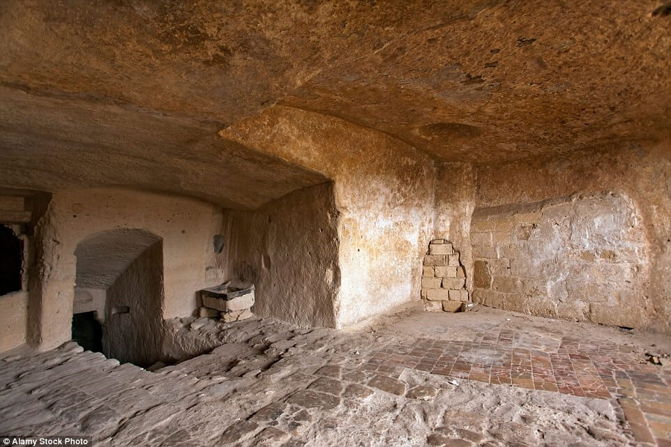

European Capital of Culture 2019
By Ionut Andrei Sacaleanu
Evacuated in 1952 due to poor living conditions, the Sassi now houses museums like the Casa Grotta di Vico Solitario, with period furniture and artisan tools.
Erasmus+ is the European Commission's Programme for education, training, youth and sport for the period 2014–2020. Approximately two-thirds of the budget is allocated to learning opportunities abroad for individuals, within the EU and beyond. Basically, the European Union is paying for us to go in different countries and attend different trainings, with no costs for us. In 2016 I attended to an Youth Exchange in Italy, the project was called „Youth Employment in Social Tourism”. During the 2 weeks I stayed in the southern part of Italy I had the chance to visit a few cities, but the one I’m going to present to you is Matera.

Landscape of the city
A few facts about the city
- Matera is going to be the European Capital of Culture in 2019.
- It’s the third-oldest continually inhabited settlement in the world (after Aleppo and Jericho) and in 1950, the city was declared the "shame of Italy" by the country's prime minister of the day.
- The whole city it’s shaped in stone, there are over 150 churches. Matera preserves a large and diverse collection of buildings related to the Christian faith, including a large number of rupestrian churches carved from the soft volcanic rock of the region.
- The cathedral recently reopened after 12 years closed for restoration, with its sober Renaissance exterior belying a baroque interior that seems excessively florid after the muted tones of the sassi.
Matera Cathedral
Want to see all this by yourself?
There are many trips with guides and hosting solutions. Hedonistic Hiking runs a nine-day Southern Italy trip that includes two nights in Matera, plus guided walks through the city and ravine. You can sleep in the caves, with breakfast in a 13th-century cave church, at Le Grotte della Civita, which has 18 evocative rooms spread through three tiers of caves.
Inside of a cave shaped in stone
The aim and the specific objectives of the youth exchange were to encourage active citizenship and a change of confrontation on self-entrepreneurship in the context of social tourism. Visting Matera was a good opportunity to work on social tourism and I definitely recommend you to visit it if you have the chance.